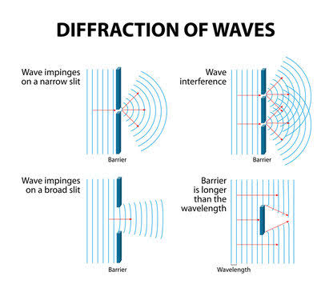
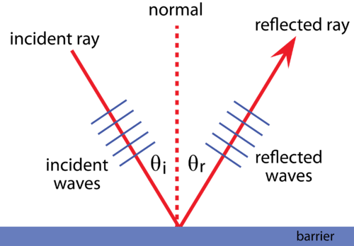
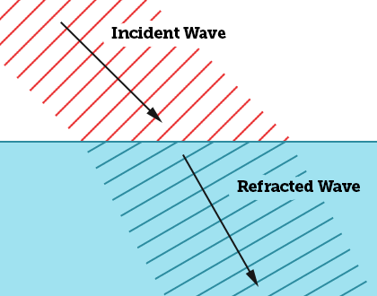
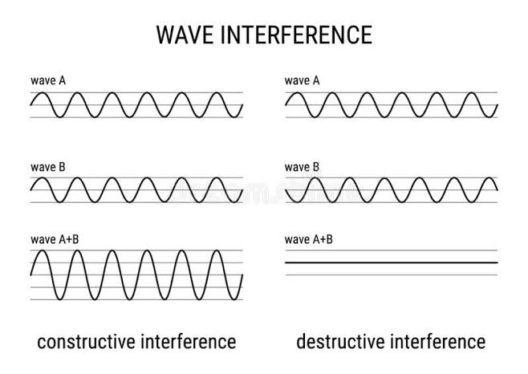
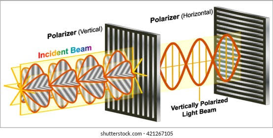
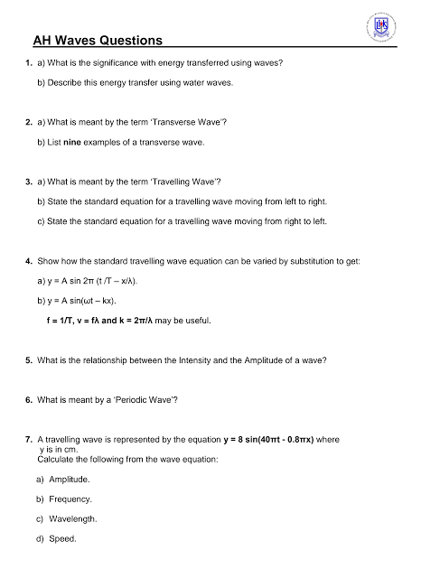

WAVES
Are waves merely physical phenomena, or could they hold the secrets to understanding the universe's deepest mystries?
Lesson Objectives
By the end of this lesson, you should be able to;
- Define a wave
- Calculate wavelength, amplitude and frequency
- Name types of waves and wave motion
- Classify waves
- Explain various applications of waves
- Solve numerical problems related to waves
Definition of terms;
Wave-is a disturbance that moves through a medium
Wave can also be define as a traveling energy.
Wavelength-is a distance between two successive identical parts of the wave.
Frequency -is the number of repetitions per second in Hz.
Amplitude -is the maximum displacement or distance moved by a point on a vibrating body or wave measured from its equilibrium position.
Period -Is the time for one wavelength to pass a point.
Velocity -is the speed at which a specific part.
of a wave passes a point.
.png)
Classification of Waves
a. Electromagnetic waves - These are waves which do not require material medium for transmission.Examples are radio waves,radiant heat,light and microwave.
b. Mechanical waves - These waves which require material medium for transmission.Examples are water waves and sound waves.They can either be transverse or longitudinal.
i. Transverse waves -
In these waves,the vibration of particles is to right angles to the direction of wave travel.For example water waves,waves on a string and electromagnetic waves ie light,radio,microwaves etc..
ii. Longitudinal waves - In these waves,the vibration of the particles is in a direction parallel to the direction of the wave travel.Examples are sound waves.
iii. Progressive waves - These are waves that move continually away from the source.They can be either transverse or longitudinal.
iv. Pulse - It is generated when a single vibration is sent through a medium.
v.Speed - The speed V of a wave is the distance covered by the wave in one second. It's S.I unit is m/s.
f = 1/T
V = distance travelled by one complete wave
/ time taken to complete one wave
.jpeg)
Characteristics of wave motion
Diffraction : Diffraction is the bending of waves around obstacles or through openings. It occurs when waves encounter an obstruction that is comparable in size to their wavelength.
This phenomenon is commonly observed with all types of waves, including sound waves, water waves, and light waves.

Reflection : Reflection is the bouncing back of waves when they encounter a boundary or surface that does not absorb the energy of the wave. The angle of incidence (the angle at which the wave strikes the surface) is equal to the angle of reflection (the angle at which the wave bounces off the surface).
This principle is fundamental in optics, acoustics, and other wave-related phenomena.

Refraction : Refraction is the bending of waves as they pass from one medium to another with different properties, such as density or speed. This bending occurs due to a change in the wave's speed, which causes the wavefronts to change direction.
Refraction is responsible for phenomena like the bending of light through a lens, the bending of sound waves through the atmosphere, and the bending of ocean waves as they approach the shore.

Interference : Interference occurs when two or more waves interact with each other. Depending on whether the waves are in phase (crest aligns with crest, trough aligns with trough) or out of phase (crest aligns with trough), interference can result in either constructive interference (waves amplify each other) or destructive interference (waves cancel each other out). Interference is a key concept in wave phenomena like diffraction, double-slit experiments, and wave optics.

Polarization : Polarization refers to the orientation of the oscillations of a wave in a particular direction. Waves can be polarized horizontally, vertically, or in any other direction perpendicular to the direction of propagation. Polarization is important in understanding phenomena like the transmission of light through polarizing filters and the behavior of electromagnetic waves.

Test your knowledge:
1. Which type of wave requires a medium to propagate?
a) Electromagnetic wave
b) Sound wave
c) Light wave
d) Radio wave
2. What is the unit of frequency?
a) Joule
b) Hertz
c) Watt
d) Ohm
3. Which of the following waves can travel through a vacuum?
a) Sound wave
b) Water wave
c) X-ray
d) Seismic wave
4. Which property of a wave determines its color in the visible spectrum?
a) Wavelength
b) Amplitude
c) Frequency
d) Velocity
5. Which of the following waves has the longest wavelength?
a) Gamma rays
b) Microwaves
c) Radio waves
d) X-rays
6. What type of wave is used in magnetic resonance imaging (MRI)?
a) X-rays
b) Ultrasound
c) Infrared
d) Radio waves
7. In which medium do seismic waves travel fastest?
a) Solid
b) Liquid
c) Gas
d) Plasma
Applications of Waves
Waves have numerous applications across various fields:
Communication - Waves, particularly electromagnetic waves, are used for communication through technologies like radio, television, and mobile phones.
Medicine - Ultrasound waves are used for medical imaging techniques such as ultrasound scans, while electromagnetic waves like X-rays are used for diagnostic imaging
Engineering - Waves play a crucial role in fields like acoustics, where they are utilized for designing sound systems, noise reduction, and vibration analysis
Transportation - Radar systems, which use electromagnetic waves, are essential for navigation and collision avoidance in aviation and maritime industries.
Manufacturing - Waves are employed in non-destructive testing methods such as ultrasonic testing to detect defects in materials without causing damage.
Environmental monitoring - Seismic waves are utilized for earthquake detection and monitoring, helping to assess seismic hazards and monitor underground activities.
Entertainment - Waves are used in various forms of entertainment, including music production, cinema sound systems, and virtual reality technologies.
Revision Questions;
